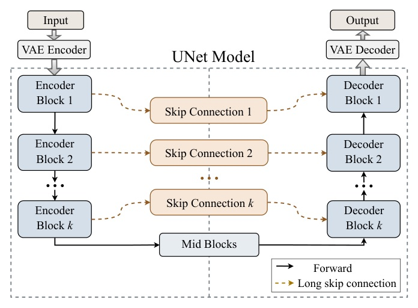
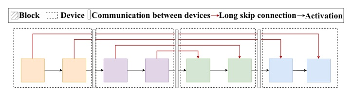
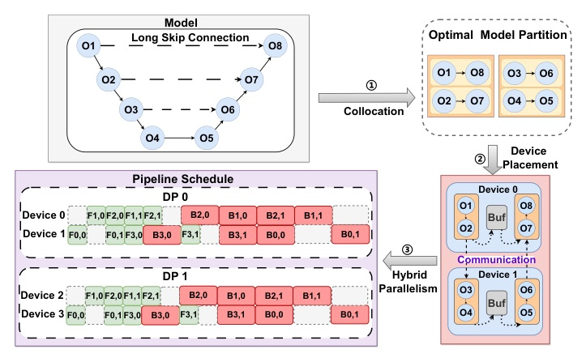
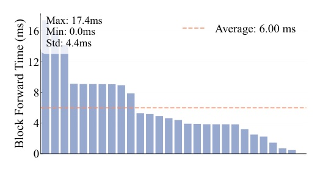
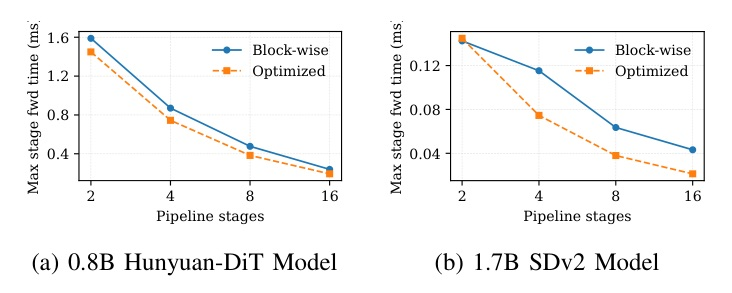
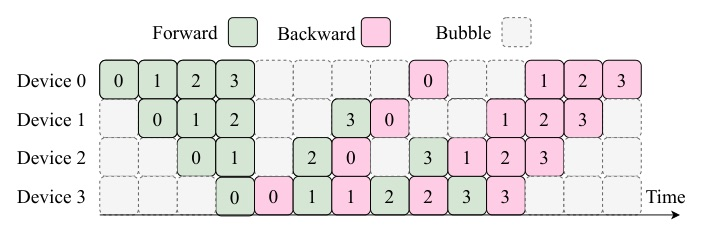
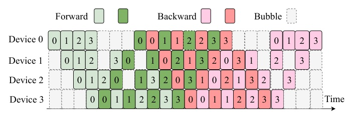
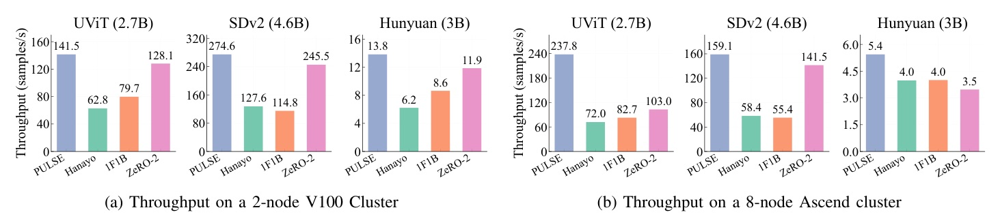
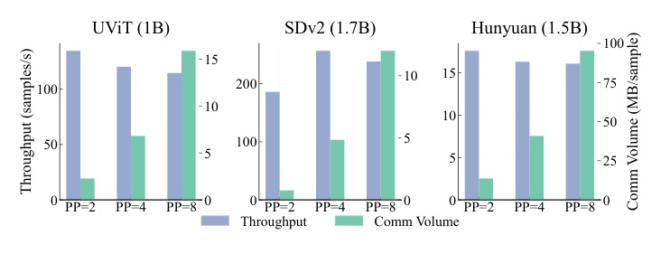

PULSE 的本質不是「更聰明地傳 skip」，而是 讓大型 skip activation 不必跨 device 傳。
它把 skip-connected encoder/decoder layers colocate 到同一 device，用 local buffer 保存 activation，再用 wave schedule 與 PP/DP tuner 把吞吐補回來。

在 naive PP 中，skip traffic 佔 inter-device communication 的 85.5%–95.0%。
這代表 bottleneck 不是抽象的「pipeline bubble」而已，而是 diffusion architecture 本身造成的 activation movement。






| Axis | Details |
|---|---|
| Hardware | 2× V100 nodes: 16 GPUs, 32GB, 300GB/s intra-node, 10GB/s inter-node |
| Hardware | 8× Ascend 910A nodes: 64 NPUs, 32GB, 30GB/s intra-node, 19GB/s inter-node |
| Models | UViT, Stable Diffusion v2, Hunyuan-DiT; scaled by blocks / hidden size |
| Baselines | Hanayo, Megatron 1F1B, DeepSpeed ZeRO-2 |
| Measurement | Throughput excludes VAE encoding / text embedding preprocessing |

| Model / baseline | PULSE | Hanayo | 1F1B | ZeRO-2 | Reading |
|---|---|---|---|---|---|
| UViT 2.7B | 141.5 | 62.8 | 79.7 | 128.1 | PULSE leads; ZeRO-2 still competitive |
| SDv2 4.6B | 274.6 | 127.6 | 114.8 | 245.5 | 140% over 1F1B; ~10% over ZeRO-2 |
| Hunyuan-DiT 3B | 13.8 | 6.2 | 8.6 | 11.9 | Low-batch high-res regime still benefits |
| Method | UViT V100 | SDv2 V100 | Hunyuan V100 | Hunyuan 910A |
|---|---|---|---|---|
| PULSE | 24.19 | 6.71 | 95.29 | 95.29 |
| Hanayo | 294.28 | 117.56 | 2885.57 | 4385.47 |
| 1F1B | 102.80 | 61.05 | 916.64 | 916.64 |
| ZeRO-2 | 318.08 | 276.48 | 2981.18 | 4385.47 |
PULSE 的增益來自一個很乾淨的因果鏈：skip locality → less P2P traffic → larger feasible throughput。
它不是單靠 scheduler 把 bubble 填滿；真正的主因是把 long skip activation 從 network path 移到 local buffer path。

“skip connections account for the vast majority of inter-device communication, exceeding 85.5%-90% in UViT and SDv2 models and dominating bandwidth”
在 diffusion PP 裡，長 skip connection 不是小雜訊，而是跨 device communication 的主體。 §II-C p.3
“skip activations are stored locally during the forward pass, and these values are retrieved for gradient computation in the backward pass.”
PULSE 的核心動作是 colocate + local buffer，而不是刪除 skip 或改模型語義。 §III p.4
“With P = 4, the reduced per-stage memory footprint permits a larger microbatch size of 32, resulting in a significant throughput boost from 186.2 to 257.0 samples/sec.”
hybrid tuning 的重點不是最大 PP degree，而是在 memory、microbatch、P2P traffic 之間找局部最優。 §VII-C p.9–10
今天的結論很簡單，也有點殘酷：如果 traffic 是架構造成的，就不要只靠 runtime scheduler 補救。先把 placement 問題說清楚。